Plán dne · neděle 8. 11. 11:30–16:15
Odpoledne kvůli mlze. Nejdřív interiér a Eva: B má na jihu dům A, takže uvnitř je měkké rozptýlené světlo, ideální na fotky i AI pláty. Pak venku ze země, ve 14:05 pěšky do údolí (Evin vstup), od 14:35 dron (nálet z údolí, slunce z JZ na zahradní straně B), v 15:15 krátce obývák v nízkém slunci a na konec Eva s kufrem u branky ve zlatém světle. Slunce 11:30 175° a 23°, 14:30 220° a 14°, 15:30 233° a 7°, západ 16:28.
Bílý dvojdům A+B přímo u silnice Bažantní, naproti přes silnici louka. B je severní polovina (blíž k trojdomu C–E), zahrada s bazénem za domem na západ. Zastavit na silnici u bodu P.
Bod P · 50.142046, 14.373143
Výjezd v 11:00, na místě kolem 11:30, konec 16:15 (západ 16:28), volitelně do 16:50 kvůli modré hodině. Na místě p. Sládek – domluvit klíče a zapnutá světla.

Jak točit
- S sebou: kufr na kolečkách (konec filmu), mikrofon na klopu (voiceover Eva), laser, 2 stativy (druhý na Evin mobil – timelapse), ND filtry.
- Lety krátce (10–20 s), pomalu a plynule. Jen rovná dráha nebo oblouk do 30° kolem domu, nikdy otáčení na místě, sklon kamery během letu neměnit.
- Na začátku a konci letu 3 s staticky. SRT (telemetrie) zapnuté. 4K, 25 fps.
- Před každým záběrem nahlas číslo řádku (u dronu 1 s telefonu s číslem) – podle něj se klipy v FD Studiu přiřadí ke scénáři.
- Klíčové věci točit i na výšku (řádky 1, 6, 14, 22): reel, Instagram a reklama 9:16 je nedostanou z výřezu v kvalitě.
- Fotky ze stativu ve výšce 1,4 m, svislice rovně, bez lidí, všechna světla zapnout. Hotový dům se schodištěm je ve filmu jen jako vizualizace se štítkem.
- Mlha ráno: interiér je stejně první. Dron až když se zvedne – nebo naopak využít mlhu nad údolím pro stoupání (řádek 18).
- Řádky A1–A10 = podklady pro AI (Kling Omni). Pravidla v záložce AI · Kling: nejdřív foto, pak video ze stejného stativu, nikdo v záběru, expozice zamčená.
Shotlist · číslo = mapa · K = kapitola filmu · štítky = kam záběr půjde
Náhledy: skutečné fotky domu B, podklady developera, nebo „AI náhled“ z ChatGPT (jen jak má záběr vypadat, ne skutečnost). Klik = plná velikost.
 GIMBALK7filmIGbanner Cportályvizualizace
GIMBALK7filmIGbanner Cportályvizualizace GIMBALK6film
GIMBALK6film GIMBALK8film
GIMBALK8film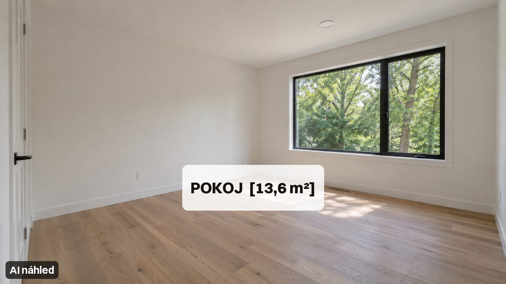
GIMBALK9filmportályvizualizace GIMBALK5filmportály
GIMBALK5filmportály STATIVK7Klingreelfilmvizualizace
STATIVK7Klingreelfilmvizualizace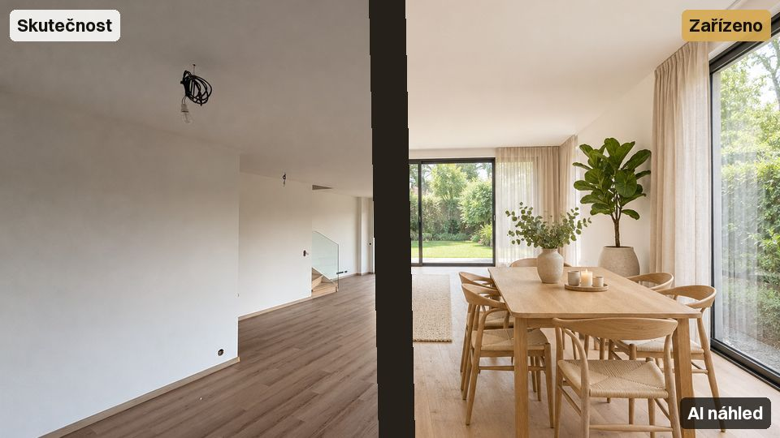
GIMBALK7Klingfilmbanner C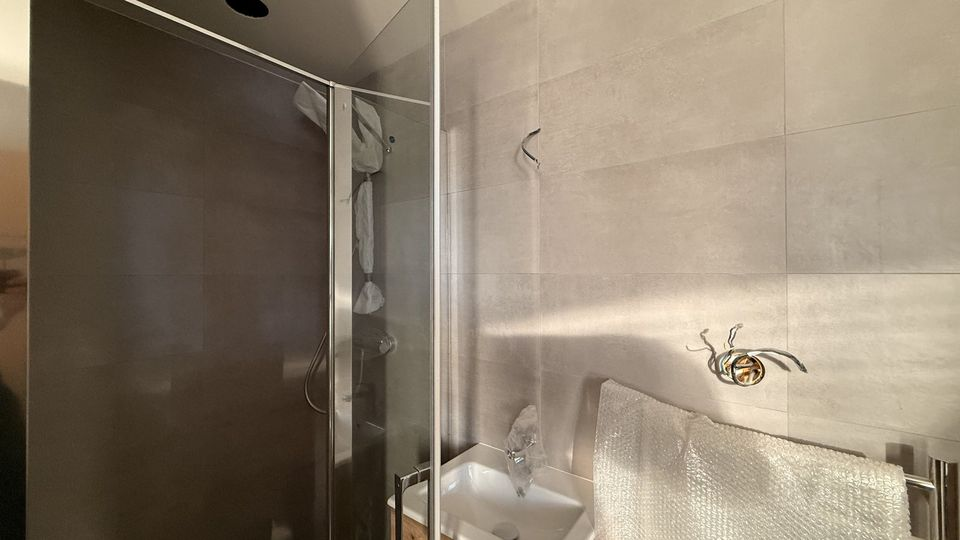
FOTO + LASERKlingvizualizace GIMBALK7filmreel
GIMBALK7filmreeldalší 2 varianty
B Padesát metrů, okna přes celou stěnu – a zařídíte si ho po svém.
C Padesát metrů a světlo ze všech stran.
 MOBIL 9:16IG
MOBIL 9:16IGdalší 2 varianty
B Kde v Praze 6 máte bazén, zahradu a za domy přírodní rezervaci? Ukážu vám to.
C Praha 6. Bazén. Údolí. Pojďte se mnou.
 MIKROFONK2K5K12film
MIKROFONK2K5K12filmdalší 2 varianty
B Vyhlídky Suchdol. Kousek nad údolím, kde město končí a začíná příroda.
C Takhle může vypadat hotový – se zahradou, bazénem a výhledem do zeleně.
další 2 varianty
B Za domem stojí developer s [X lety] praxe. Co je v ceně, vidíte hned – a zbytek dokončí podle vás.
C Zkušený developer. Dům dokončí podle vás.
další 2 varianty
B Do Dejvic, na Hrad i na letiště je to kousek. A doma je ticho nad údolím.
C Město na dosah. Doma ticho.
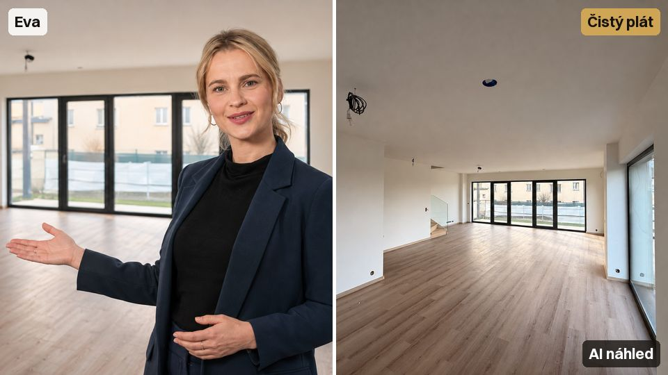
STATIVK7Klingfilm GIMBALK13filmportály
GIMBALK13filmportály STATIVK3K4filmreelbanner A
STATIVK3K4filmreelbanner Adalší 2 varianty
B Dům je ve finální fázi. Poslední úpravy s vámi udělá přímo developer.
C Skoro hotovo. Zbytek podle vás.
 STATIVK11filmreel
STATIVK11filmreeldalší 2 varianty
B Vlastní zahrada a bazén. A teď se podívejte, jak rychle jste odsud kdekoli.
C Váš kus přírody. A město za rohem.
 STATIVK10film
STATIVK10film MOBIL 9:16reel
MOBIL 9:16reeldalší 2 varianty
B V bytě tohle nemáte. Počítejte se mnou.
C Byt, nebo tohle?
další 2 varianty
B Bazén – jedna. Zahrada – dvě. A tři: místo, kde končí Praha.
C Bazén. Zahrada. Údolí.
další 2 varianty
B Hotovo, zkolaudováno, klíče čekají. Ozvěte se.
C Napište mi.
 STATIVK2Klingreelbanner Avizualizace
STATIVK2Klingreelbanner Avizualizace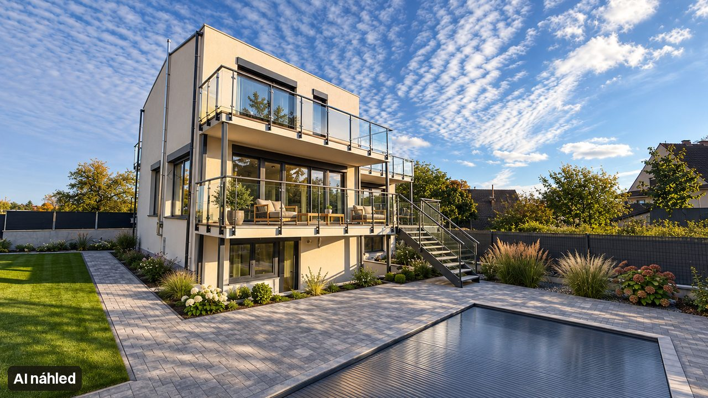
STATIVK2Klingvizualizace STATIVK1filmreelIG
STATIVK1filmreelIGdalší 2 varianty
B Tohle místo má genius loci. Jste v nádherné přírodě – a dům, který vám chci ukázat, stojí hned kousek odtud.
C Tohle je pořád Praha. A dům stojí hned kousek odtud.
 STATIVK1filmbanner B
STATIVK1filmbanner B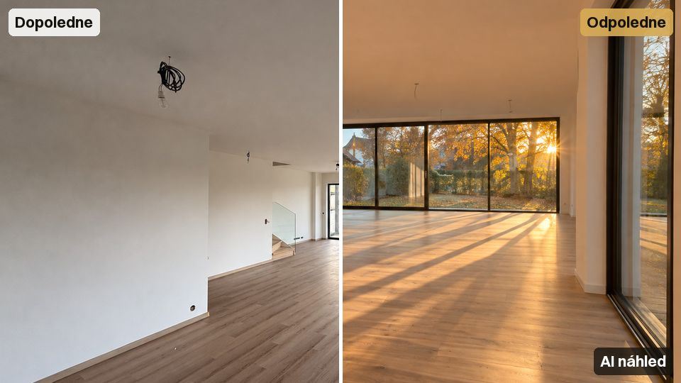
MOBIL TIMELAPSEK7Klingfilmbanner C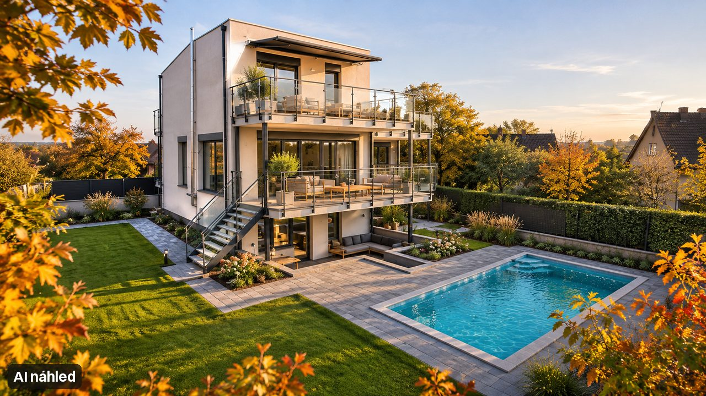
DRONK2filmbanner Abanner B DRONK2filmbanner Aportály
DRONK2filmbanner Aportály DRONK1K12filmbanner B
DRONK1K12filmbanner B DRONK12filmportály
DRONK12filmportály DRONK12filmbanner B
DRONK12filmbanner B DRONK2filmbanner Bportály
DRONK2filmbanner Bportály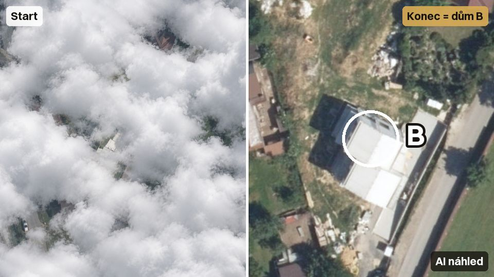
DRONK2Klingfilmbanner B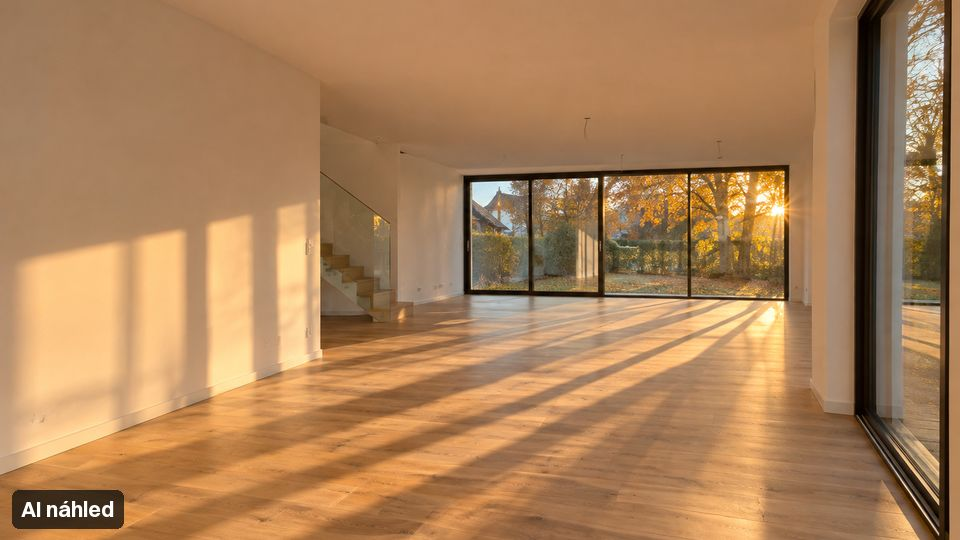
STATIVK7Klingfilmbanner Cvizualizace STATIVK13filmreel
STATIVK13filmreeldalší 2 varianty
B Musím na letadlo, letiště mám za čtvrt hodiny. Zavolejte mi a domluvíme si prohlídku jen pro vás.
C Letím – letiště je za patnáct minut. Zavolejte mi.
 STATIVK13banner Abanner Bbanner Cportályvizualizace
STATIVK13banner Abanner Bbanner Cportályvizualizace STATIVK2Klingfilmbanner Aportály
STATIVK2Klingfilmbanner AportályFilm 16:9 · cca 80 s · finální scénář
Hlavní video podle Evina výběru (8. 11.). Začátek filmově v údolí, nálet na hotový dům a návrat do dneška, pak svižná realitní část s titulky v prostoru. Natáčí se jinak, podle světla (Plán dne). Odkaz „řádky“ skočí do shotlistu.
1Údolí · genius loci 0:00–0:07
Eva na louce s výhledem nad údolím, za ní stromy a údolí. Filmově, jen název.
další 2 varianty
B Tohle místo má genius loci. Jste v nádherné přírodě – a dům, který vám chci ukázat, stojí hned kousek odtud.
C Tohle je pořád Praha. A dům stojí hned kousek odtud.
Natočit: → řádky 14, 15, 18
2Nálet na hotový dům 0:07–0:15
Dron vzlétne z údolí, přeletí koruny stromů a doletí k domu B. Kling ho dotáhne na HOTOVÝ dům: schodiště z terasy na zahradu, schůdky u branky (kde dnes leží paleta), zelená zahrada, zábradlí jako u domu A, voda v bazénu. Štítek „Vizualizace“. Voiceover namlouvá Eva.
další 2 varianty
B Vyhlídky Suchdol. Kousek nad údolím, kde město končí a začíná příroda.
C Takhle může vypadat hotový – se zahradou, bazénem a výhledem do zeleně.
Natočit: → řádky 8, A5, A6, 16, 17, 21, A8, A10

3Zpátky do dneška 0:15–0:17
Efekt pozpátku: schody, zábradlí a zahrada se během 2 s „rozeberou“ do dnešního stavu a kamera se přiblíží k Evě u bazénu.
Natočit: → řádky 10
4Eva u bazénu 0:17–0:23
Eva stojí u bazénu, za ní zahradní fasáda. Jedna věta.
další 2 varianty
B Dům je ve finální fázi. Poslední úpravy s vámi udělá přímo developer.
C Skoro hotovo. Zbytek podle vás.
Natočit: → řádky 10
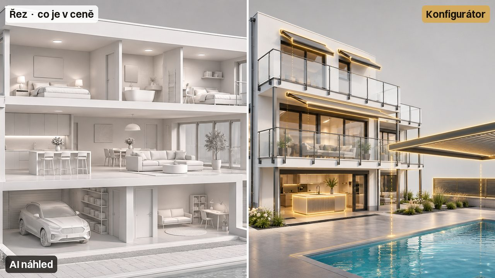
5Developer · dům ve 3D 0:23–0:31
Bílý 3D model domu v řezu jako na Klamovce (co je v ceně), pak konfigurátor (co si dokončíte podle sebe). Voiceover Eva. [X let] zjistit dnes od p. Sládka.
další 2 varianty
B Za domem stojí developer s [X lety] praxe. Co je v ceně, vidíte hned – a zbytek dokončí podle vás.
C Zkušený developer. Dům dokončí podle vás.
Natočit: → řádky 5, 8
6Oknem dovnitř 0:31–0:34
Portál: z balkonu pomalu ke skleněné stěně obýváku a sklem rovnou dovnitř.
Natočit: → řádky 2

7Obývák 0:34–0:44
Eva prochází prázdným obývákem a kolem ní přibývá nábytek v teplém moderním stylu (Kling Omni jen na prostor, Eva z originálu maskou). Štítek „Vizualizace“.
další 2 varianty
B Padesát metrů, okna přes celou stěnu – a zařídíte si ho po svém.
C Padesát metrů a světlo ze všech stran.
Natočit: → řádky 1, A1, A2, 6, A4, A7, A9
8Rentgen nahoru 0:44–0:46
Kamera se zvedne ke stropu, strop se rozpustí do bílých linek a proletíme do patra.
Natočit: → řádky 3
9Pokoje 0:46–0:53
Průchod pokoji a koupelnou, plochy jako štítky v prostoru (z půdorysu, ověřit).
Natočit: → řádky 4
10Na zahradu 0:53–0:55
Hloubkový wipe z balkonu: zahrada se odhalí od zábradlí do dálky. Bez věty.
Natočit: → řádky 12
11Zahrada 0:55–1:02
Eva na trávníku ukáže přes pozemek a převede nás k dostupnosti.
další 2 varianty
B Vlastní zahrada a bazén. A teď se podívejte, jak rychle jste odsud kdekoli.
C Váš kus přírody. A město za rohem.
Natočit: → řádky 11
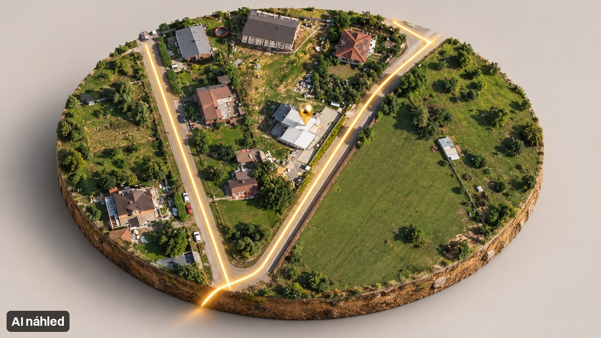
12Dostupnost 1:02–1:12
Dron s vyznačenými místy, pak 3D mapa jako ve Slaném: letiště, Pražský okruh, metro A Dejvická, Hradčany, údolí. Časy autem bez provozu (OSRM), před titulky ověřit.
další 2 varianty
B Do Dejvic, na Hrad i na letiště je to kousek. A doma je ticho nad údolím.
C Město na dosah. Doma ticho.
Natočit: → řádky 8, 18, 19, 20
13Letiště a prohlídka 1:12–1:20
Eva s kufrem u branky – letí na dovolenou, a vy jí zavolejte. Karta RE/MAX + telefon. Prohlídky jen individuálně.
další 2 varianty
B Musím na letadlo, letiště mám za čtvrt hodiny. Zavolejte mi a domluvíme si prohlídku jen pro vás.
C Letím – letiště je za patnáct minut. Zavolejte mi.
Natočit: → řádky 9, 22, 23
Instagram, reel a film na výšku
Instagram Evy organicky (bez placené reklamy na Metě – Franta na schůzce: Meta zatím ne). Reel prodává konkrétní věci z domu.
Vstup na Instagram (Eva, 20–30 s)
Natočit zvlášť na mobil na výšku, osobně a do kamery, u okna s výhledem. Pod tím záběry z domu na výšku (řádky 1, 6, 14, 22).
další 2 varianty
B Kde v Praze 6 máte bazén, zahradu a za domy přírodní rezervaci? Ukážu vám to.
C Praha 6. Bazén. Údolí. Pojďte se mnou.
Natočit: → řádky 7
Reel „3 věci“ (~25 s)
Hook před domem do 2 s, pak bazén → zahrada → údolí (střih na údery, Eva ukazuje prsty 1–2–3). Titulky po slovech.
další 2 varianty
B V bytě tohle nemáte. Počítejte se mnou.
C Byt, nebo tohle?
další 2 varianty
B Bazén – jedna. Zahrada – dvě. A tři: místo, kde končí Praha.
C Bazén. Zahrada. Údolí.
další 2 varianty
B Hotovo, zkolaudováno, klíče čekají. Ozvěte se.
C Napište mi.
Natočit: → řádky 13
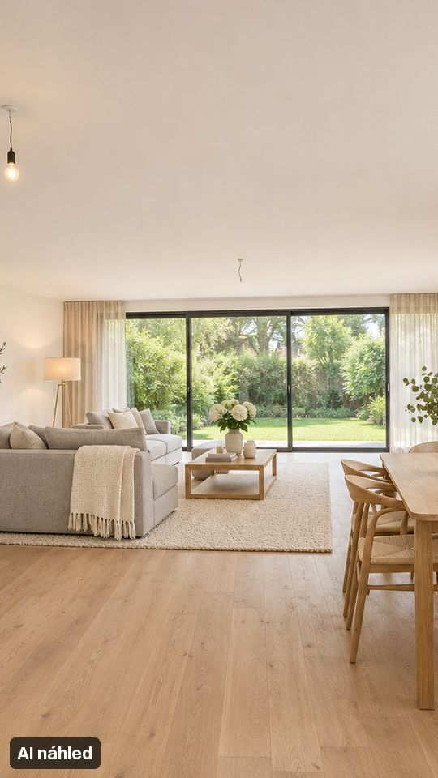
Reel „Prázdný dům se zařídí“ (~12 s, AI)
Hook bez slov: prázdný obývák se po kusech zařídí (Kling, recept 02), pak zahrada vyroste a rozsvítí se. Štítek Vizualizace. Výřez 9:16 ze 4K ještě před Klingem.
Natočit: → řádky A1, A5
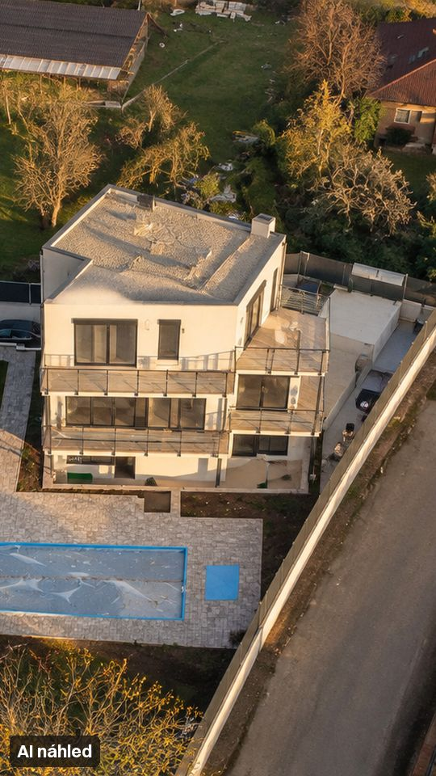
Film na výšku 30–45 s
Výřez z filmu: údolí, nálet, Eva u bazénu, obývák, konec s kufrem. Pro YouTube Shorts a stories (9:16 ze 4K, Eva točená i na výšku).
Natočit: výřez z filmu
Zařízený obývák a hotová zahrada ve videu
Co natočit navíc, aby šel prázdný obývák zařídit přímo ve videu a dům zvenčí „dodělat“ (léto, voda v bazénu, soumrak). Řádky A1–A10 jsou v Plánu dne mezi ostatními, zabarvené zlatě. Odkaz „řádky“ skočí do shotlistu.
Jak točit pro AI
- Nejdřív foto, pak video ze stejného stativu a výšky. Z fotky udělá ChatGPT vizualizaci: je to buď poslední snímek klipu, nebo vzor pro Kling. Když se záběr liší, Kling vymyslí přelet a stavba se rozteče.
- Staticky znamená opravdu staticky: stativ, 12 s, nedotýkat se, spoušť z mobilu. Jízda = jedna osa, pomalu, 8 s, 3 s klidu na začátku i na konci. Žádný šven přes 30°, zoom ani přeostření.
- Zamknout expozici, vyvážení bílé a ostření (stejné Kelviny na celý interiér). Okna nepřepálit, radši o třetinu tmavší; k fotkám −2/0/+2 EV.
- V záběru nikdo: žádný stín stativu, odraz štábu v oknech, tašky ani kabely. Dveře otevřené stejně jako na fotce.
- Stropní světla u denních plátů zhasnout, smíšené světlo AI přebarví. Rozsvícené jen v modré hodině (A10).
- Kompozice s rezervou: to důležité do středu, ať jde ze 4K výřez 9:16 pro reel ještě před Klingem.
- Rozměry a materiály (A3) jdou do promptu: „sedačka 2,6 m u levé stěny, dub, bílá dvířka“. Nábytek pak sedí velikostí a AI drží materiály.
- Na místě nic negenerujeme. Cenu spočítáme předem a generuje se až po tvém OK (Kling 3.0 pro 10 s ≈ 15 kr).
Co z toho uděláme
Obývák se zařídí sám Kling 3.0 pro, první + poslední snímek, 10 s · ~15 kr
Kamera stojí, prázdný obývák se po kusech v klidu zařídí: linka a světla, sedačka, stůl, koberec, nakonec květiny. Začátek = skutečný záběr, konec = vizualizace z fotky ze stejného stativu. Hook reelu a 6s reklama na YouTube. Se sluncem na podlaze (A9) ještě líp.
Natočit: → řádky A1, A9
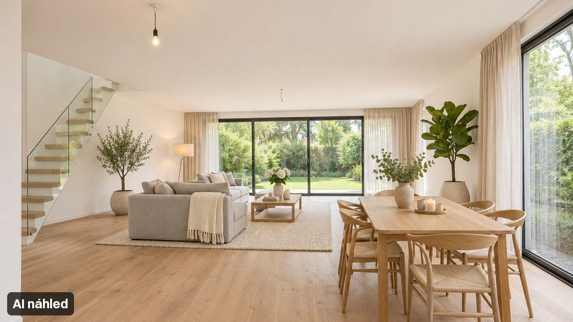
Zařízený obývák v pohybu Kling 3.0 Omni Edit · reference = vizualizace
Skutečná jízda obývákem a AI do ní jen domaluje nábytek podle vizualizace z fotek A2. Stavba, okna, světlo i pohyb kamery zůstanou ze skutečného záběru. Do filmu (kapitola Uvnitř).
Natočit: → řádky 6, A2
Skrytý střih za hranou bez AI pohybu – střih v DaVinci
Boční jízda projde za hranou schodiště nebo ostrůvku. Ve chvíli, kdy hrana zakryje obraz, střih z prázdného (skutečnost) na zařízený (Omni Edit). Divák nevidí šev.
Natočit: → řádky A2
Zahrada vyroste Kling 3.0 pro, první + poslední snímek, 10 s · ~15 kr
Listopadová zahrada se ve stejném záběru promění: trávník, voda v bazénu, nábytek na terase, pak slunce zapadne a rozsvítí se okna a zahrada. Reklama A „Dům se zahradou a bazénem za cenu bytu“.
Natočit: → řádky A5
Léto z dronu Kling 3.0 Omni Edit
Oblouk kolem domu natočený v listopadu → zelená zahrada a voda v bazénu, dům a okolí beze změny. Ve filmu přechod „teď / v létě“.
Natočit: → řádky A8
Z mraků na dům Nano Banana 2K + Kling 3.0 pro · ~17 kr
Úvod filmu nebo hook: kamera klesá z mraků kolmo na dům B. Když bude v neděli mlha, uděláme to zdarma ze skutečnosti: stoupání 13 nad mlhu přehrajeme pozpátku.
Natočit: → řádky A8, 18
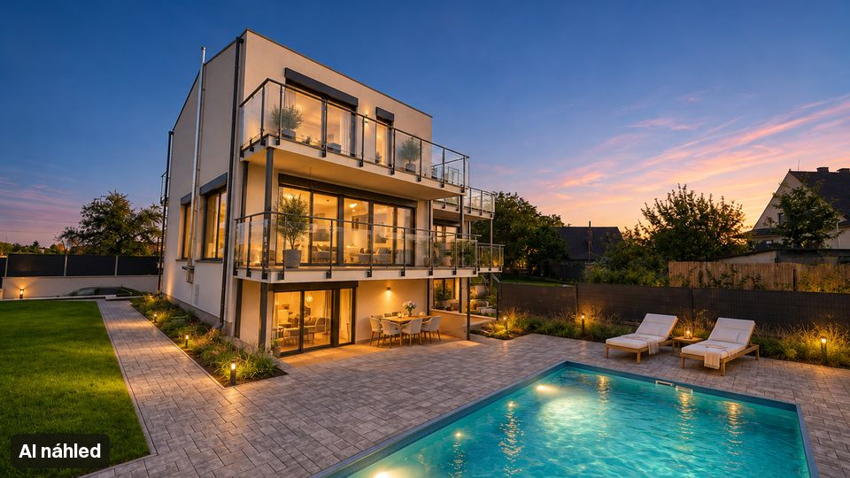
Soumrak Kling 3.0 Omni Edit · reference = skutečná modrá hodina
Skutečný záběr v modré hodině je vzor. Podle něj AI udělá soumrak i na dronových záběrech a rozsvítí stejná okna.
Natočit: → řádky A10
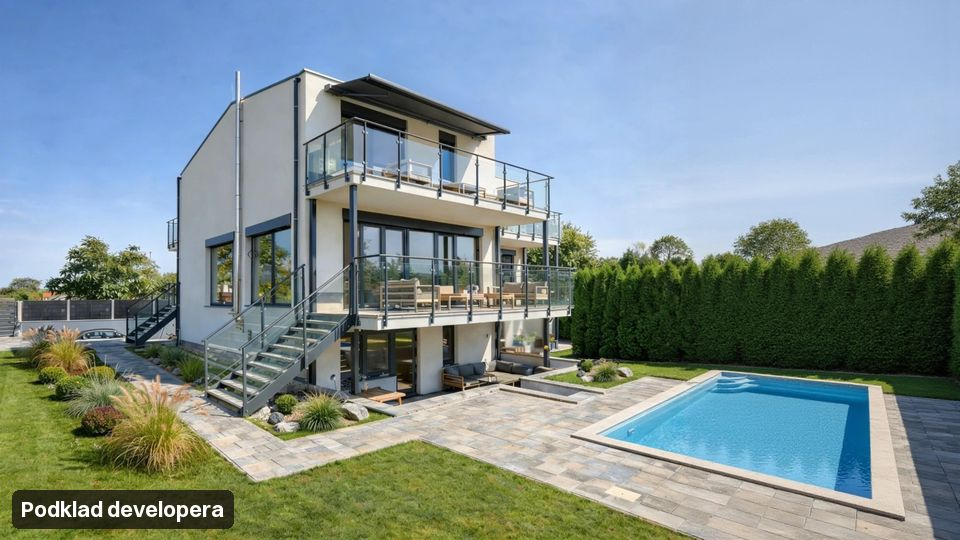
Schodiště za příplatek vizualizace (ChatGPT) z fotky A7
Jak by vypadaly zadní schody k bazénu. Pro Evu do jednání („takhle to bude, příplatek asi 75 tis.“). Do veřejného videa ne, nebo jen se štítkem „Vizualizace · za příplatek“.
Natočit: → řádky A6
Eva v zařízeném domě maska v DaVinci, bez AI na Evě
Eva z originálního záběru + čistý plát ze stejného stativu zařízený přes Kling. Evu přes AI nikdy nepouštíme, obličej by se změnil.
Natočit: → řádky 6, A4
Světlo putuje po podlaze skutečný timelapse, bez AI
Hodina slunce v prázdném obýváku za 6 s. Předěl ve filmu a důkaz, kolik světla dům má (reklama C).
Natočit: → řádky A8
Vychytávky navíc
- Ruka na klice: U řádku 9: Eva zvenku sáhne na kliku vchodových dveří (detail 3 s), pak zevnitř dveře otevře. Střih do zařízeného obýváku = příchod domů.
- Okno jako portál: Řádek 2: z balkonu ke sklu a sklem dovnitř – Eva ho vybrala jako cestu do obýváku.
- Mlha jako dárek: Když bude mlha, stoupání 18 nad ni a totéž pozpátku. Skutečný „z mraků na dům“ bez kreditů.
- Dva starty: A1 dopoledne (měkké světlo) a A9 v nízkém slunci ze stejného místa. Vybereme, který vypadá líp, a ze stejné vizualizace jde obojí.
Poctivost
- Všechno, co AI přidá, má v obraze štítek „Vizualizace“ po celou dobu, kdy je to vidět.
- Stavba se nemění: okna, dveře, zábradlí, schody uvnitř, výhled. AI jen zařizuje a ukazuje léto.
- Zadní schody ve veřejném videu ne, nebo jen „Vizualizace · za příplatek“. Jinak by je kupec čekal v základní ceně.
- Listopadová zahrada je skutečnost, léto a voda v bazénu jen jako vizualizace (bazén je zazimovaný).
Co z natáčení kam půjde
Každý řádek shotlistu má štítek, kam jeho záběr půjde (film, reel, IG, banner A/B/C, portály, vizualizace). Tady je pořadí kanálů ze schůzky 6. 11. a tři reklamní sdělení pro test A/B/C.
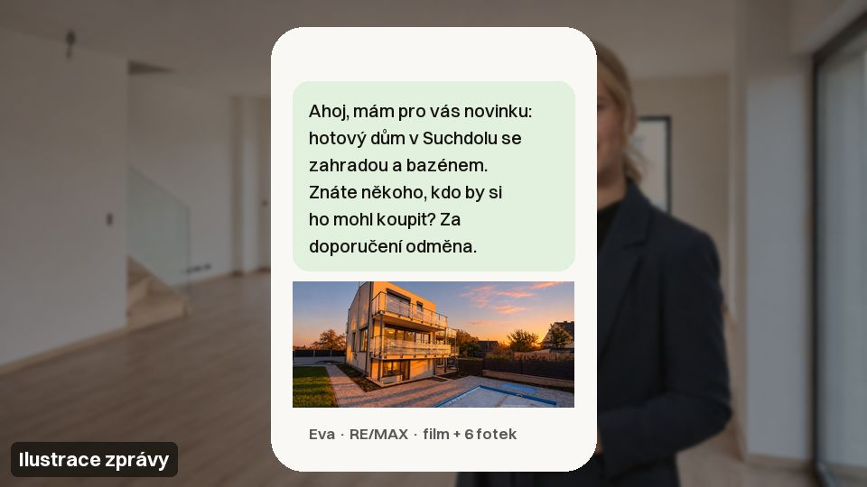
Fáze 1 · naše síť týden po schválení výstupů
Eva pošle RE/MAX a síti 200 makléřů krátkou zprávu „Znáte někoho, kdo by si to mohl koupit?“ s odkazem, filmem a 6 fotkami. Odměna za doporučení kupce – výši a kdo ji platí domluvit s p. Sládkem. Eva zároveň dá vstup a reel na svůj Instagram.
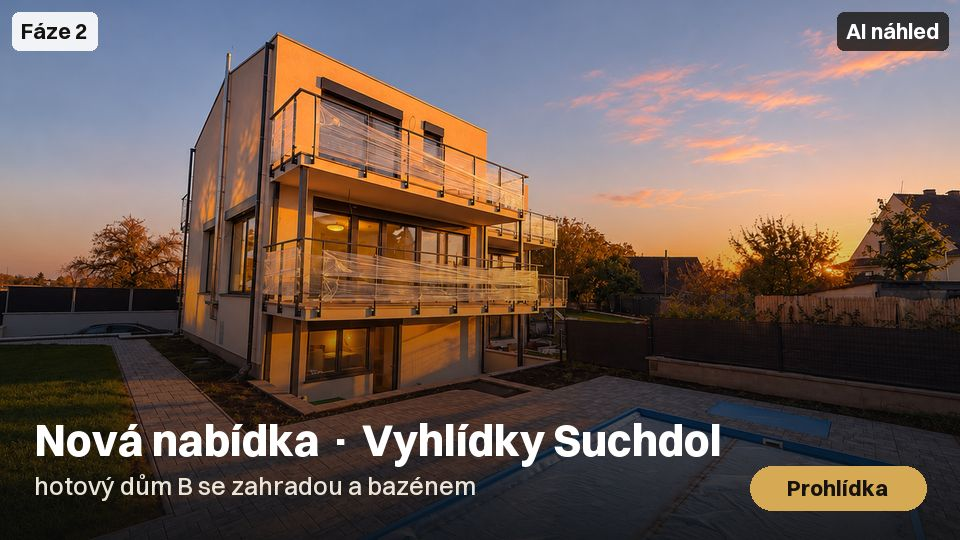
Fáze 2 · veřejně po fázi 1, ještě před Vánoci
Nová nabídka s novými fotkami: portály v kategorii Domy (4+kk + garsonka se zahradou), film a 3D/fotky. Slevy ani bonusy v inzerátu neukazovat – až při jednání.
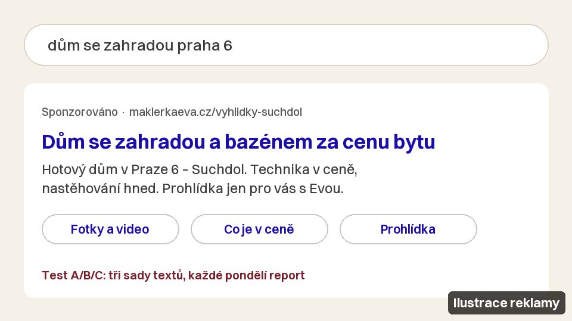
Google · vyhledávání od fáze 2
Hledání „dům se zahradou Praha 6“, „novostavba Suchdol“, „dům s bazénem Praha“. Tři sady textů A/B/C, každé pondělí report a úprava.
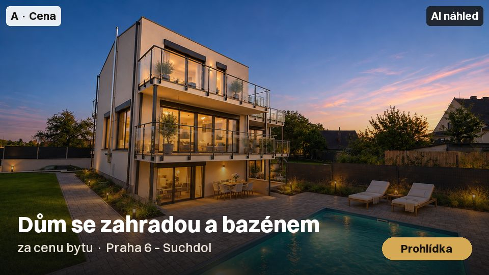
Google · bannery a YouTube od fáze 2
Bannery 1200×628, 1200×1200, 960×1200 a 300×250 z fotek (řádky označené „banner A/B/C“), YouTube 15 s a 6 s z filmu, Shorts z verze na výšku.
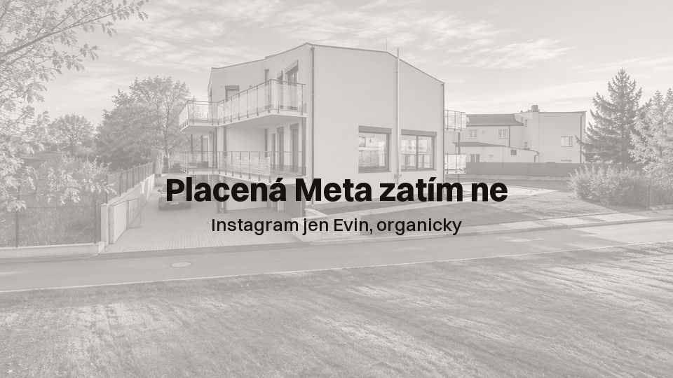
Meta (Facebook, Instagram) zatím ne
Placená reklama na Metě zatím vypnutá (kupci 35–45 let hledají přes Google a portály). Instagram jen Evin organicky. Zapnout, až když síť a Google nestačí.
Test A/B/C (Google, vždy titulek + hero záběr + 15s výřez)
hero: fasáda + bazén (10, 16, 23)
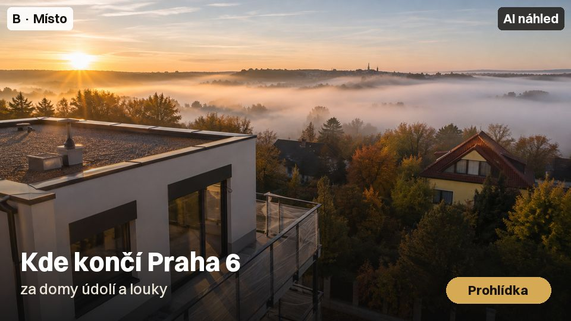
hero: dron nad údolím (14, 16, 18)
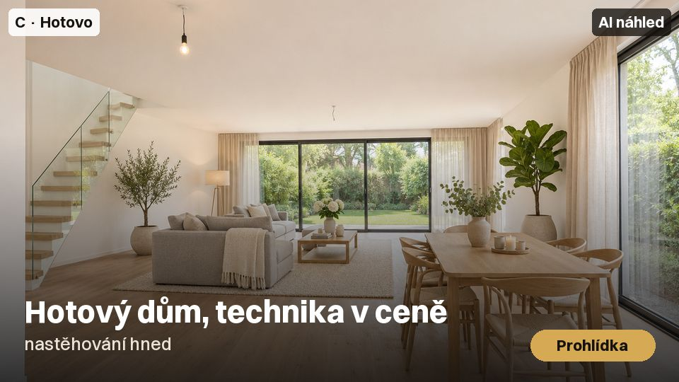
hero: obývák a Loxone (1, 6, A1)
Co se děje dál
Do 7 dnů (do ne 15. 11.)
První výstupy ke schválení p. Sládkovi: film v1, reel, Evin vstup na IG, 30 vybraných fotek. Nezatěžovat ho dalšími otázkami.
AI · Kling
Z plátů A1–A10 (záložka AI · Kling): obývák se zařídí sám, zařízený obývák v pohybu, zahrada vyroste, léto z dronu, soumrak. Nejdřív vizualizace z fotek, pak cena v kreditech a generuje se až po Frantově OK. Štítek „Vizualizace“ vždy.
Vizualizace
Z fotek prázdných místností (řádky 1–5 a A1–A3): obývák s kuchyní, ložnice, dětský pokoj, garsonka v 1.PP, letní zahrada s odkrytým bazénem (A5 a 23). Vždy štítek „Vizualizace“, jeden styl pro celou sadu. Pokud bude 3D prohlídka B, vizualizace až po ní.
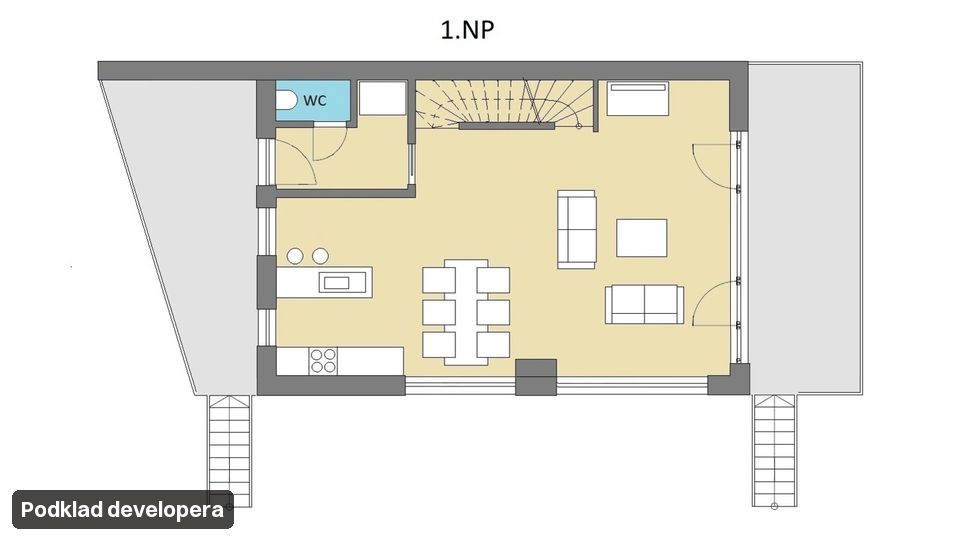
Půdorysy
Upravit půdorysy B: vymazat zadní schodiště k bazénu (není v základní ceně – příplatek). Dveře jako volitelný příplatek.
Cena a podklady
Základní cena co nejnižší (pod 25 mil.) bez zadních schodů a dveří – číslo potvrdí p. Sládek. Ceny příplatků (schody ~75 tis., s podestou ~160 tis.) od něj. Na place zjistit, kolik let staví a kolik domů postavil (voiceover VO2).
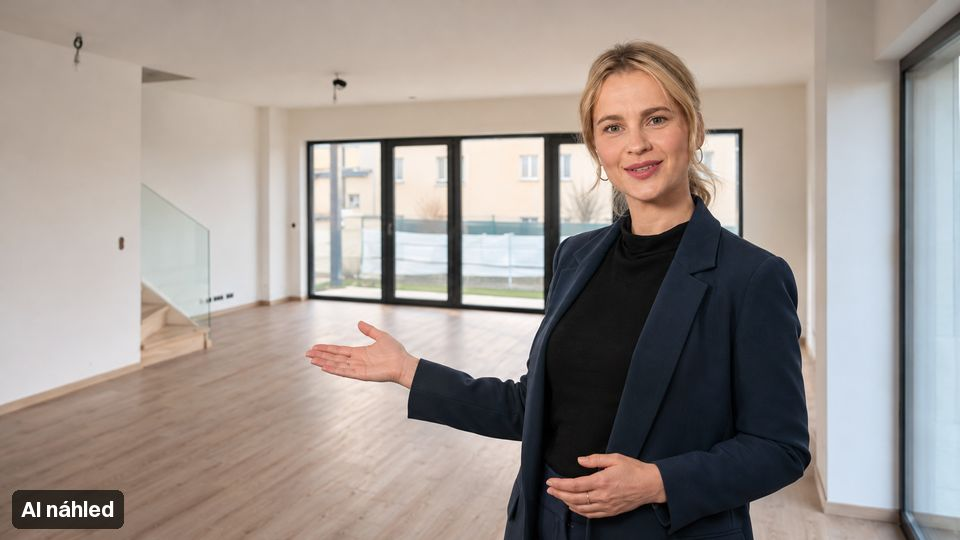
Prohlídky
Jen individuálně s Evou, žádné hromadné dny otevřených dveří.